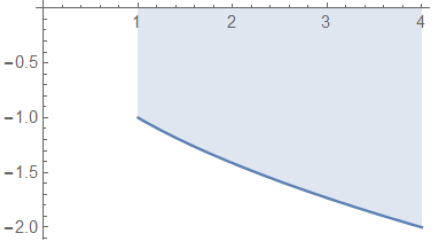
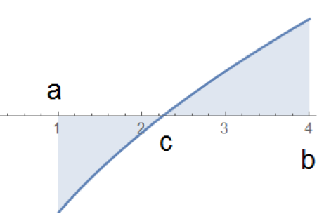
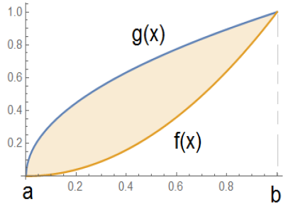
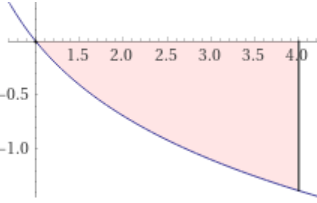
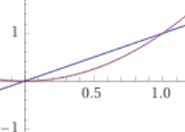
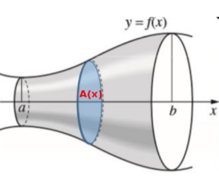
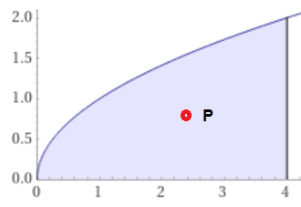

Integraalin sovelluksia
Contents
Integraalin sovelluksia¶
Integraalilaskentaa voidaan käyttää pinta-alojen ja tilavuuksien laskentaan. Rakenustekniikassa sen sovelluksia ovat esim. kappaleiden painopisteiden ja hitaus- ja jäyhyysmomenttien laskeminen.
Pinta-alojen laskeminen¶
Määrätty integraali \(\int_{a}^{b}f(x)dx\) antaa käyrän y = f(x) ja x- akselin välisen alueen pinta-alan vain jos \(f(x) \ge 0 \) koko välillä \([a,b]\). Seuraavassa tarkastellaan tapauksia, jossa f(x) on negatiivinen tai sen merkki vaihtelee ko. välillä.
Pinta-alojen laskeminen integroimalla eri tapauksissa.
\(\text{1.}\) Kun \(f(x) \ge 0\) välillä \([a,b]\), käyrän ja x- akselin välinen pinta-ala A = \(\int_{a}^{b}f(x)dx\)
\(\text{2.}\) Kun \(f(x) \le 0\) välillä \([a,b]\), käyrän ja x- akselin välinen pinta-ala A = -\(\int_{a}^{b}f(x)dx\)

\(\text{3.}\) Kun f(x):n merkki vaihtelee välillä \([a,b]\) voidaan pinta-ala määrittää integroimalla funktio |f(x)|, jossa itseisarvo peilaa funktion negatiiviset osat x - akselin yläpuolelle, ts.
A = \(\int_{a}^{b}|f(x)|dx\)

\(\text{4.}\) Kahden käyrän \(f(x)\) ja \(g(x)\) välinen alue välillä \([a,b]\) voidaan laskea kahden pinta-alan erotuksena, ja se voidaan laskea kaavalla A = \(\int_{a}^{b}|f(x) - g(x)|dx\)

Laske käyrän y = -ln(x) ja x-akselin välisen alueen ala välillä [1,4].
Alla tarvittavat WolframAlpha komennot:
Piirretään kuva alueesta ( W.A)) \(\color {red}{\text {plot -log(x) from 1 to 4 }} \)

Lasketaan pinta-ala: \(\color {red}{\text {- integrate -log(x) from 1 to 4}} \)
Pinta-alaksi saadaan 2.55
Laske käyrien y = x ja y = \(x^2\) väliin jäävän suljetun alueen ala.
Alla tarvittavat WolframAlpha komennot:
Piirretään kuva alueesta: \(\color {red}{\text {plot x, x^2 from -1 to 2 }} \)

Kuvan perusteella integroimisrajat ovat 0 ja 1.
Lasketaan pinta-ala: \(\color {red}{\text {integrate abs(x-x^2) from 0 to 1}} \)
Pinta-alaksi saadaan 0.167
Pyörähdyskappaleen tilavuus¶
Käyrän y = f(x) pyörähtäessä x - akselin ympäri välillä \([a,b]\) jää käyrän ja x- akselin väliin kappale, jonka poikkileikkaukset ovat ympyröitä.

Kappeleen tilavuus V voidaan esittää äärettömän tiheänä summana ohuista sylintereistä, joiden paksuus on \(\Delta x\) ja säde f(x). Kun jakovälin \(\Delta x\) lähestyy nollaa, saadaan tilavuus raja-arvona \(\underset{\Delta x\to 0}{lim}\sum \pi f(x)^2 \Delta x\).
Summalauseke on määrätyn integraalin määritelmän nojalla sama kuin integraali \( V = \pi \int_{a}^{b} f(x)^2 dx \)
Pyörähdyskappaleen tilavuuden kaava
\( V = \pi \int_{a}^{b} f(x)^2 dx \)
Esim. Johda integroimalla r - säteisen pallon tilavuuden kaava
Pallo voidaan ajatella pyörähdyskappaleena, jossa origokeskisen, r -säteinen ympyrän kaari \(y = \sqrt {r^2 -x^2}\) pyörähtää välillä
\([-r,r]\) x-akselin ympäri. Pyörähdyskappaleen tilavuuden kaavalla pallon tilavuus
\( V = \pi \int_{-r}^{r} (\sqrt {r^2 - x^2})^2 dx \)
= \(\pi \int_{-r}^{r} (r^2 - x^2) dx \)
= \(\pi \overset{r}{\underset{-r}{/}} (r^2x-\frac {x^3}{3})\)
= \(=\pi ((r^3-\frac {r^3}{3})-({(-r)}^3-\frac {(-r)^3}{3})\)
= \(\frac{4}{3} \pi r^3\)
Tasoalueen painopiste¶
x - akselilla kohdissa \(x_i\) sijaitsevien pistemäisten massojen \(m_i\) muodostaman systeemin painopisteen x- koordinaatti lasketaan kaavalla \(x_P = \frac{m_1x_1+m_2x_2+...+m_nx_n}{m_1+m_2+...+m_n}\).
Painopisteen x- koordinaatti on siten niiden koordinaattien painotettu keskiarvo, jossa painokertoimina ovat massat.
Käyrän y = f(x), missä \(f(x)\ge 0\) ja x-akselin välisen alueen voidaan ajatella muodostuvan kapeista pylväistä, joiden massoina voidaan käyttää niiden pinta-aloja \(f(x) \Delta x\). Painopisteen x - koordinaatin kaava on
\(x_p=\frac{1}{A}\int_{a}^{b}x f(x)dx \hspace{2 cm}\)
missä A = \(\int_{a}^{b}f(x)dx\) on alueen pinta-ala.
Kunkin pylvään painopisteen y -koordinaatti on keskellä pylvästä korkeudella \(\frac{1}{2}f(x)\). Alueen painopisteen y-koordinaatti \(y_p\) saadaan painotettuna keskiarvona
\(y_p=\frac{1}{A}\int_{a}^{b}\frac{1}{2}f(x)f(x)dx = \frac{1}{A}\int_{a}^{b}\frac{1}{2}f(x)^2dx\)
Mikäli sallitaan, että käyrä y = f(x) saa myös negatiivisia arvoja, kaavat monimutkaistuvat hieman.
Käyrän y = f(x), missä \(f(x) \ge 0\) ja x- akselin välisen alueen painopiste \(P=(x_p,y_p)\)
\(x_p=\frac{1}{A}\int_{a}^{b}xf(x)dx \hspace{2 cm}\)
\(y_p=\frac{1}{A}\int_{a}^{b}\frac{1}{2}f(x)^2dx\)
missä A = \(\int_{a}^{b}f(x)dx\)
Laske käyrän \(y = \sqrt{x}\) ja x-akselin välillä \([0,4]\) väliin jäävän alueen painopiste

Alueen pinta-ala \(A = \int_{0}^{4}\sqrt{x}\hspace{1mm} dx\) = 5.333
\(x_p=\frac{1}{A}\int_{a}^{b}xf(x)dx =\frac{1}{5.333}\int_{0}^{4}x \sqrt{x}\hspace{1mm} dx\) = 2.40
\(y_p=\frac{1}{A}\int_{a}^{b}\frac{1}{2}f(x)^2dx =\frac{1}{5.333}\int_{0}^{4}\frac{1}{2}x \hspace{1mm} dx\) = 0.75
Vastaus: Painopiste P = (2.40, 0.75)